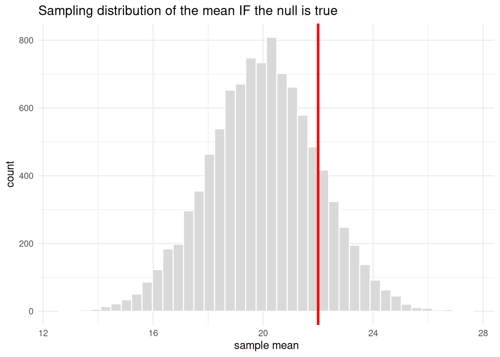

We often label our efforts “hypothesis testing.” Here we dispel that myth and talk about what we are actually doing. Let us be clear from the first sentence, because this is one of the most misunderstood ideas in statistics:
ImportantThe Whole Chapter in One Sentence
The so-called “null hypothesis significance test” (\(H_0\)) is not a test of your hypothesis. It is merely a way to check whether your data are consistent with a world in which nothing is going on - no effect, no difference, no relationship. Rejecting the null does not prove your idea is right. It only says the data would be surprising if nothing were going on.
Everything else in this chapter is commentary on that one sentence.
7.1 Learning Objectives
Understand what a null hypothesis actually states - and what it does not.
Learn the mechanics of a significance test so you can compute and read one.
Distinguish Type I from Type II error, and understand what \(\alpha\) buys you.
Appreciate why rejecting the null is weak evidence for your theory - and why we do it anyway.
7.2 First, Why We Test Anything at All
Recall the through-line of this whole book: we care about populations, but we only ever have access to samples. We make inferences about populations from samples, and we use probability to make educated guesses about what a sample tells us given some assumption about the population. Hold onto that sentence; the entire logic of testing hangs from it.
Here is the move. We do not know the truth about the population. So we assume something specific about it - almost always that there is no effect - and then we ask: if that assumption were true, how surprising would my data be? If the data are surprising enough, we doubt the assumption. That assumption is the null hypothesis.
7.3 What a Null Hypothesis Really Says
A null hypothesis, \(H_0\), is a statement of no effect, no difference, or no relationship, written in the language of population parameters. It is deliberately boring. Watch what happens when we translate real questions into null statements:
A weight-loss program? \(H_0\): dieters “would not be different” from people who did no program.
A new medication or vaccine? \(H_0\): treated people show “no different outcomes” compared to untreated people.
A natural disaster’s effect on mental health? \(H_0\): the disaster “produces no effects.”
Notice that in every case, \(H_0\) says nothing is happening. The alternative hypothesis, \(H_1\), takes the more optimistic stance that something is happening. We collect data and then - and this is the crux - we use the data to evaluate the credibility of the null. The question we are really asking is:
How far away from the null do we need to be before the observed value is considered unlikely if the null were true?
That is a question about data consistency with a no-effect world. It is emphatically not the question “is my theory true?” Keep those two apart and you have grasped the key distinction.
7.4 The Machinery: A Worked Example
Let us make this concrete with the simplest test there is. Suppose a population has a mean \(\mu = 20\) and standard deviation \(\sigma = 4\). We draw a sample of \(n = 4\) and observe a sample mean of \(\bar{x} = 22\). Is that surprising if the population mean really is 20?
The key idea is the sampling distribution of the mean: if we drew sample after sample, the means would themselves form a distribution, centered on \(\mu\), with a standard deviation - the standard error of the mean - of \(\sigma_{\bar{x}} = \sigma / \sqrt{n}\).
NoteWorking in SPSS, Julia, or Python?
The code tabs below assume this chapter’s data is already loaded. Grab the one-file setup for your language from Getting the Book’s Data, run it once, then load what you need by name - this chapter uses ch07-nulldist. For example, book_data("ch07-nulldist") in R, Julia, or Python, or !bookdata name = "ch07-nulldist". in SPSS. Every language reads the same shipped files, so your numbers will match the ones printed here exactly.
library(tidyverse) # dplyr, ggplot2, purrr, tibble, readr, stringr, forcatssource("_common.R") # book-wide helpers: round2(), fmt_p(), tidy2()mu <-20# population mean under H0sigma <-4# population standard deviationn <-4# sample sizexbar <-22# our observed sample meantibble(standard_error = sigma /sqrt(n), # standard error of the meanz = (xbar - mu) / standard_error, # how many SEs above the null?p_value =pnorm(z, lower.tail =FALSE) # P(mean > 22) if H0 is true) |>mutate(p_value =fmt_p(p_value)) |>round2()
standard_error
z
p_value
2
1
0.159
* The standard error, z, and one-tailed p for a sample mean of 22
* against a null mean of 20 with sigma = 4 and n = 4.
DATA LIST FREE /mu sigma n xbar.
BEGIN DATA
20 4 4 22
END DATA.
COMPUTE standard_error = sigma / SQRT(n).
COMPUTE z = (xbar - mu) / standard_error.
COMPUTE p_value = 1 - CDF.NORMAL(z, 0, 1).
EXECUTE.
LIST VARIABLES=standard_error z p_value.
usingDistributionsmu, sigma, n, xbar =20, 4, 4, 22standard_error = sigma /sqrt(n) # SE of the meanz = (xbar - mu) / standard_error # how many SEs above the nullp_value =ccdf(Normal(0, 1), z) # P(mean > 22) if H0 is true
from scipy.stats import normmu, sigma, n, xbar =20, 4, 4, 22standard_error = sigma / n**0.5# SE of the meanz = (xbar - mu) / standard_error # how many SEs above the nullp_value = norm.sf(z) # P(mean > 22) if H0 is true
So a sample mean of 22 sits exactly one standard error above the null value, and the probability of getting a mean that large (or larger) if the null is true is about 0.159. Let us see it:
# Simulate 10,000 sample means from the H0 world and see where 22 landsset.seed(1908) # the year Gosset published "Student's" tmeans <-tibble(sample_mean =map_dbl(1:10000, \(i) mean(rnorm(n, mean = mu, sd = sigma))))ggplot(means, aes(x = sample_mean)) +geom_histogram(bins =40, fill ="grey85", colour ="white") +geom_vline(xintercept = xbar, colour ="red", linewidth =1.2) +labs(title ="Sampling distribution of the mean IF the null is true",x ="sample mean", y ="count") +theme_minimal()

* Simulate 10,000 sample means of n = 4 from the H0 world (mu = 20, sigma = 4)
* and see where the observed 22 lands.
INPUT PROGRAM.
LOOP #i = 1 TO 10000.
COMPUTE sample_mean = MEAN(RV.NORMAL(20, 4), RV.NORMAL(20, 4),
RV.NORMAL(20, 4), RV.NORMAL(20, 4)).
END CASE.
END LOOP.
END FILE.
END INPUT PROGRAM.
EXECUTE.
GRAPH /HISTOGRAM = sample_mean
/TITLE = 'Sampling distribution of the mean IF the null is true'.
usingRandom, Distributions, Statistics, PlotsRandom.seed!(1908) # the year Gosset published "Student's" tmeans = [mean(rand(Normal(20, 4), 4)) for _ in1:10_000]histogram(means, bins =40, legend =false, title ="Sampling distribution of the mean IF the null is true", xlabel ="sample mean", ylabel ="count")vline!([22], linewidth =2, color =:red)
import numpy as npimport matplotlib.pyplot as pltrng = np.random.default_rng(1908) # the year Gosset published "Student's" tmeans = rng.normal(20, 4, size=(10_000, 4)).mean(axis=1)plt.hist(means, bins=40, color="lightgrey", edgecolor="white")plt.axvline(22, color="red", linewidth=2)plt.title("Sampling distribution of the mean IF the null is true")plt.xlabel("sample mean"); plt.ylabel("count")plt.show()
The red line is our result. It is on the high side, sure, but plenty of the null world’s own samples land out there too. This is what “the data are (or are not) surprising under \(H_0\)” looks like, drawn to scale.
7.5 The Decision Rule: \(\alpha\), Critical Regions, and Four Steps
We need a rule for “surprising enough.” By long (and arbitrary) convention, we draw the line at 5%: we set a significance level\(\alpha = .05\) and declare a result “statistically significant” if it falls in the most extreme 5% of the null distribution - the critical region.
For a two-tailed test (we would care about a difference in either direction), the critical values are \(z = \pm 1.96\).
For a one-tailed test (we only care about one direction), the critical value is \(z = 1.65\).
Every significance test, no matter how fancy, follows the same four steps:
State the hypotheses and choose \(\alpha\).
Set the decision criterion - locate the critical region.
Collect data and compute the test statistic.
Decide: if the statistic falls in the critical region, reject \(H_0\); otherwise, fail to reject it.
WarningWe Never Accept the Null
Before you try your hand, be crystal clear about something: we never accept the null. We only reject the null or fail to reject it. Failing to reject \(H_0\) is not evidence that nothing is happening. It may just mean our sample was too small, too noisy, or too crude to detect what is there. Absence of evidence is not evidence of absence.
7.6 Two Ways to Be Wrong
Because we are guessing about a population from a sample, we can guess wrong in two distinct ways:
\(H_0\) is really true
\(H_0\) is really false
We reject \(H_0\)
Type I error (\(\alpha\))
Correct ✓ (power, \(1-\beta\))
We fail to reject \(H_0\)
Correct ✓ (\(1-\alpha\))
Type II error (\(\beta\))
A Type I error is a false alarm: we shout “effect!” when nothing is there. Its rate is exactly the \(\alpha\) we chose - that is what \(\alpha = .05\)means. A Type II error is a miss: we shrug “nothing here” when something really is. Three things push a test toward the correct-rejection cell: a bigger true difference, less variability, and a larger sample. That correct-rejection probability, \(1-\beta\), is called power, and it gets its own chapter (Statistical Power).
7.7 Now the Uncomfortable Part
You could stop here, pass most stats exams, and go on to (mis)use significance tests for the rest of your career like everyone else. But we promised you the why, so buckle up. There are many detractors of null hypothesis significance testing (NHST), but none more insightful or knowledgeable than Paul Meehl(Meehl 1967). His critique deserves your full attention.
1. The test answers the wrong question. What you want to know is the probability that your hypothesis is true given your data, \(P(H \mid D)\). What the p-value gives you is the probability of your data given the null, \(P(D \mid H_0)\). These are not the same thing, and one is not a stand-in for the other. Confusing \(P(D \mid H_0)\) with \(P(H \mid D)\) is one of the most common mistakes in applied statistics.
2. The null is almost certainly false before you collect a single datum. In the social sciences, two groups are essentially never exactly equal down to infinite decimal places. So \(P(H_0) \approx 0\) from the start; the null is a straw man. With a big enough sample you can reject any nil null, which means a “significant” result can be a statement about your sample size rather than about the world.
3. Rejecting \(H_0\) is not evidence for \(H\). This is the logical heart of it. Even granting the test, rejecting “nothing is happening” does not establish your particular explanation for why something is happening. Logically, NHST commits the fallacy of affirming the consequent: “if my theory is true, then I’ll see an effect; I see an effect; therefore my theory is true.” That reasoning is invalid, and no amount of \(p < .05\) repairs it.
NoteWhy One Failed Prediction Doesn’t Sink a Theory (or One Success Save It)
Meehl pointed out that a theoretical prediction never rides alone. To derive a testable observation you must bolt your substantive theory \(T\) together with a raft of auxiliary assumptions - other theories \(A_x\), a “all else equal” clause \(C_p\), assumptions about your instruments \(A_i\), and the particular conditions you actually realized \(C_n\):
Because the whole bundle is on trial, a rejected null can’t tell you which piece failed - maybe your theory, maybe your thermometer. This is why “we ran a significance test” is a thin foundation for a scientific claim.
4. Significant is not the same as important. A result can be statistically significant and utterly trivial, or non-significant and enormously important. An effect “may be significantly different from the null but that effect may still be very small” - you just had a big sample or a tiny standard error. This is why we report effect sizes (like Cohen’s \(d\)) alongside p-values. As McKnight is fond of noting, a correlation below .5 can flag a hugely important effect, while a correlation above .9 can be a trivial finding. The p-value alone cannot tell the difference; only you and your judgment can.
7.8 So Why Do We Still Do It?
Fair question. Because, as Sir Ronald Fisher himself insisted (and as we noted back in the introduction), a significant test is best read as a reason for optimism, a hint that something here is worth a closer look, and nothing more. It is a screening tool, not a verdict.
And pragmatically: since NHST tends to be the gate-keeper of social-science findings, you might find some comfort in knowing how the tests are computed, even as you hold them at arm’s length. You have to speak the language to change the conversation. So learn it well, then use it wisely: report your effect sizes, quantify your uncertainty honestly, and never confuse a small p-value with the truth of your theory.
ImportantEstimation vs. testing - and the alternatives to the ritual
Notice that this whole chapter answered a testing question (“is it different from the null?”) and never really an estimation one (“what is the effect, and how sure am I?”). Those are different questions, and modern practice increasingly leads with estimation. You are not stuck with the normal-curve \(p\)-value, either: a permutation test gets you a \(p\)-value with no distributional assumption, a bootstrap interval tests by simply excluding the null, and a Bayesian analysis reports the posterior probability of your hypothesis directly (via a credible interval or a ROPE). We build all three - and draw the estimation-vs-testing line sharply - in Beyond the Normal Curve.
7.9 Challenge
TipDo One Yourself
A commuter claims her average drive is 24.3 minutes. You suspect it is longer. Over \(n = 9\) independent days you record a mean of \(\bar{x} = 27\) minutes; assume the population standard deviation is \(\sigma = 6\) minutes.
State \(H_0\) and \(H_1\) in words and as parameter statements. Is this one-tailed or two-tailed?
Compute the standard error of the mean, the \(z\) statistic, and the p-value (do it in R with pnorm()).
At \(\alpha = .05\), what do you decide - and state the decision using the correct language (reject / fail to reject).
Now the hard part: write one sentence explaining what your p-value does mean, and one sentence explaining what a naive reader would wrongly think it means.
If you can do step 4 cleanly, you understand hypothesis testing better than many working researchers.
7.10 Where We Go Next
We deliberately set aside one cell of the error table - the correct-rejection probability, \(1-\beta\), or power. Power is where you take back some control: it is the part of testing you can plan for before you collect a single observation. That is the subject of the next chapter, Statistical Power.
Meehl, P. E. 1967. “Theory-Testing in Psychology and Physics: A Methodological Paradox.”Philosophy of Science 34 (2): 103–15.